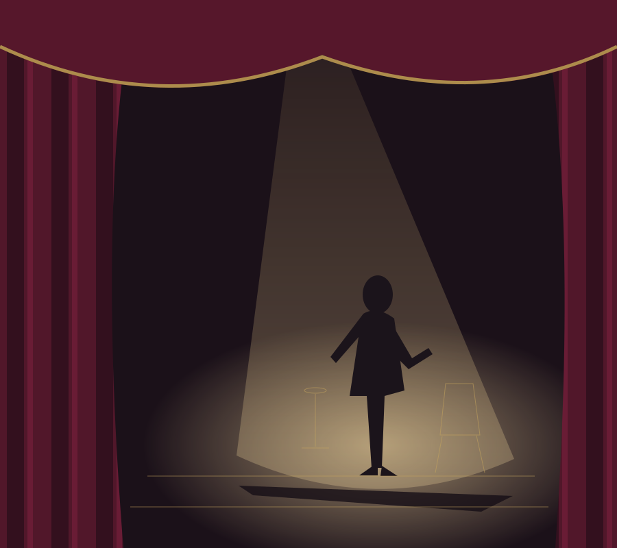

THE GLASS MENAGERIE
Until 31 OctoberDRAMA
Book ↗
NOW PLAYING · UNTIL 31 OCTOBER
THE 2026–27 SEASON / A DEMONSTRATION PROGRAMME
Tennessee Williams' memory play,
in a new production directed by Aisha Coleman.
AN EVENING THAT STAYS WITH YOU.MANCHESTER · SINCE 1897
ON STAGE NOW
THREE REASONS TO COME BACK
February – March
April – May
June – July
YOUR EVENING
The Circle Bar opens ninety minutes before curtain up. Pre-theatre suppers in the Balcony Room from 5:30pm.
Order interval drinks before the show and, in our imagined theatre, they'll be waiting at your table.
Selected Thursday performances are followed by a free conversation with the cast.
THE HOUSE
IS YOURS.
A STAGE WITH STORIES
Designed by Frank Matcham and restored in 2019, the theatre in our brief is a Victorian playhouse with a remarkable past. Charlie Chaplin is said to have played here at fourteen.
Historical details and charity information are supplied fictional programme content, not verified claims about a real venue.
912seats in the brief
127years of stories*
THE LYRIC MEMBERS
A WARM WELCOME
Relaxed, captioned, audio-described and BSL-interpreted performances are included in this sample season. Level stalls access and a lift to the circle are part of the design brief.
Illustrative dates. Contact the venue to verify access arrangements before travelling.
BOX OFFICE / PRODUCTION INFORMATION
This static programme has no seat map or booking engine. Contact the box office to confirm dates, prices and availability. No tickets are reserved here.
Box office details ↓PLAN YOUR VISIT
48 Shaftesbury Row
Manchester M2 3LY
Five minutes' walk from Manchester Piccadilly, per the sample brief.
Monday–Saturday
10am until curtain up
0161 480 1897
Fictional contact details
Check parking restrictions and accessible routes locally. This demonstration does not provide live transport or parking information.
See access performances ↗